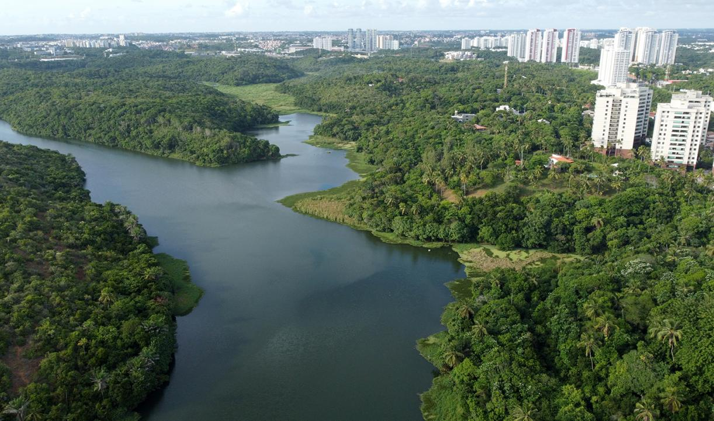
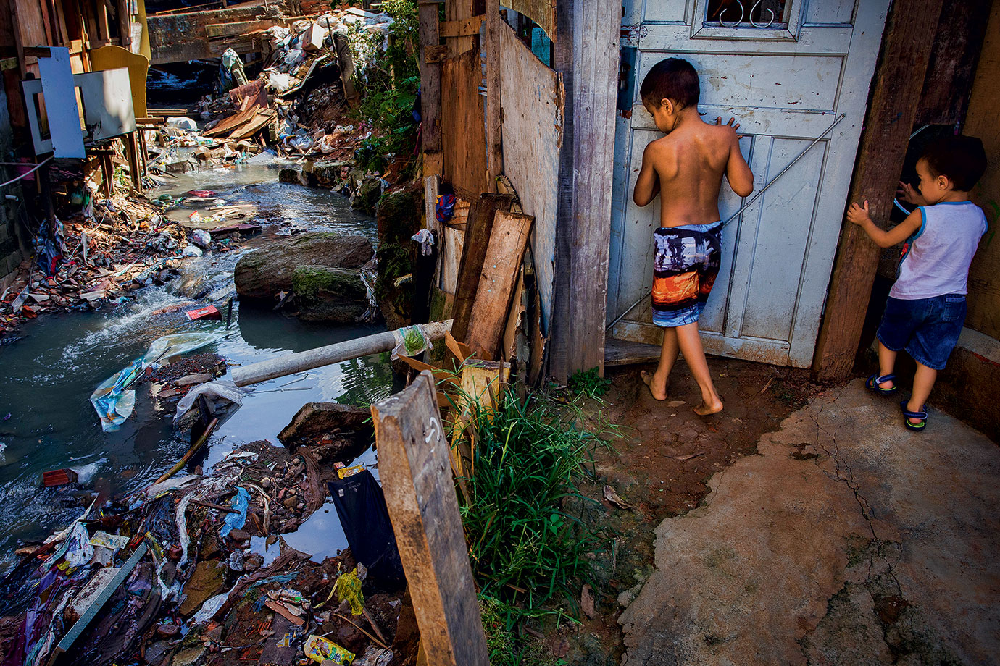
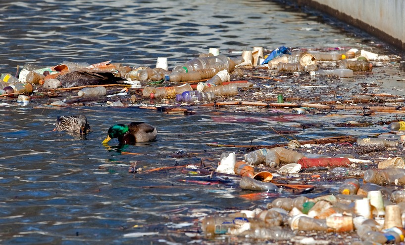
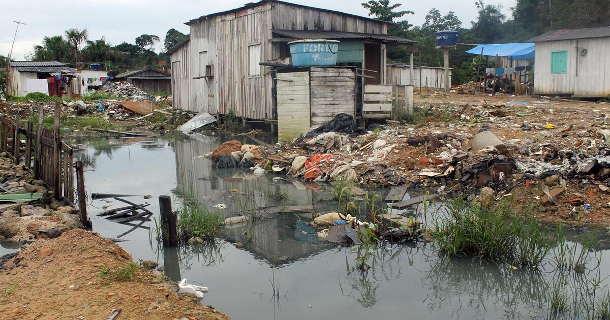
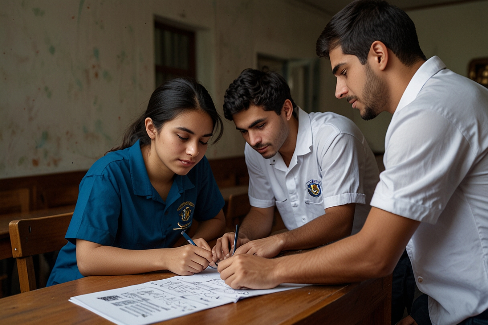

“Água Potável e Saneamento: A Luta Pela Vida ”
Sinopse:
Este documentário explora a importância vital da água potável e do saneamento básico como direitos humanos fundamentais. Através de depoimentos de especialistas, histórias de comunidades afetadas pela falta de acesso a esses recursos e soluções inovadoras, o filme revela o impacto que a escassez de água limpa e a ausência de saneamento adequado têm na saúde pública, meio ambiente e no desenvolvimento socioeconômico global.
O Planeta Água

A água é fundamental para a vida no planeta, mas apesar de cobrir 70% da Terra, apenas 2,5% é doce. Desses 2,5%, menos de 1% está disponível para consumo humano, pois a maioria está congelada ou em locais difíceis de acessar. Isso torna a água potável um recurso muito valioso, e é importante cuidar bem dela, evitando o desperdício e poluição, para garantir que todos tenham água no futuro.
A Crise Global da Água Potável

Especialistas em recursos hídricos e climatologia explicam que a crise da água no mundo está aumentando por três principais motivos: a demanda crescente, o desperdício e a contaminação. Com mais pessoas no planeta e o crescimento das indústrias e da agricultura, precisamos de mais água do que nunca. Além disso, muitos lugares desperdiçam água e a poluição a torna imprópria para o consumo. As mudanças climáticas também pioram a situação, trazendo secas em algumas regiões e enchentes em outras. Por isso, é importante cuidar da água e usá-la de forma consciente.
A água potável é um recurso vital para a saúde e o bem-estar humano, mas, de acordo com dados alarmantes da Organização Mundial da Saúde (OMS) e do Fundo das Nações Unidas para a Infância (UNICEF), milhões de pessoas ainda não têm acesso a esse recurso essencial. As estatísticas revelam que, especialmente em regiões da África Subsaariana, Ásia e América Latina, a crise da água é uma realidade preocupante.
Segundo novos dados da Organização Mundial da Saúde (OMS) e do Fundo das Nações Unidas para a Infância (UNICEF), em 2022
Água: Em 2022, 2,2 bilhões de pessoas ainda não tinham acesso seguro a água potável, incluindo 115 milhões de pessoas que consumiam água superficial.
Saneamento: Em 2022, 3,5 bilhões de pessoas ainda não tinham acesso a saneamento gerenciado com segurança, incluindo 419 milhões que praticavam a defecação a céu aberto.
Fonte:ONU
Em muitas áreas, a falta de infraestrutura, a poluição e as mudanças climáticas têm contribuído para a escassez de água potável. Isso resulta em sérios problemas de saúde, como doenças transmitidas pela água, que podem ser fatais, especialmente para crianças. A situação é ainda mais crítica em comunidades vulneráveis, onde as pessoas precisam caminhar longas distâncias para conseguir água, muitas vezes de fontes contaminadas.
Esses dados ressaltam a necessidade urgente de investimentos em infraestrutura hídrica, além de políticas eficazes de conservação e manejo dos recursos hídricos. Garantir o acesso à água potável segura é fundamental para promover a saúde pública e o desenvolvimento sustentável. A solução para essa crise exige um esforço conjunto de governos, organizações e da sociedade civil para garantir que todos tenham acesso a esse direito básico.
Um Desafio de Saúde Pública

Saneamento básico refere-se ao conjunto de medidas e serviços que garantem o acesso a água limpa, a coleta e o tratamento de esgoto, a gestão de resíduos sólidos e a drenagem de águas pluviais. É um aspecto essencial para a saúde pública e o bem-estar das comunidades.
A importância do saneamento básico é evidente, especialmente quando se trata de prevenir a disseminação de doenças. Quando as pessoas têm acesso a água potável e um sistema adequado de esgoto, o risco de contaminação e doenças transmitidas pela água, como diarreia, cólera e hepatite A, diminui consideravelmente. Além disso, o tratamento de resíduos sólidos evita a proliferação de vetores, como mosquitos, que podem transmitir doenças como dengue e zika.
Infelizmente, em muitas regiões, especialmente em áreas urbanas e rurais vulneráveis, a falta de saneamento básico contribui para a crise de saúde pública. Portanto, investir em saneamento é crucial não apenas para melhorar a qualidade de vida, mas também para proteger a saúde da população e promover um ambiente mais seguro e saudável para todos. A implementação de políticas eficazes nesse setor é fundamental para alcançar o desenvolvimento sustentável e garantir o direito à saúde.
A pandemia da COVID-19 destacou de forma clara a importância de instalações sanitárias adequadas para a saúde pública. Durante esse período, a lavagem frequente das mãos se tornou uma das principais recomendações para prevenir a propagação do vírus. No entanto, muitas comunidades, especialmente em áreas vulneráveis, enfrentaram dificuldades devido à falta de acesso a água potável e a banheiros adequados.
A ausência de instalações sanitárias apropriadas dificultou a adoção de medidas de higiene, aumentando o risco de contaminação não apenas pelo coronavírus, mas também por outras doenças. Em regiões onde o saneamento é deficiente, as pessoas muitas vezes são obrigadas a usar fontes de água poluídas e locais inadequados para a eliminação de resíduos, o que gera um ambiente propício para surtos de doenças.
Além disso, a pandemia mostrou que a infraestrutura sanitária não é apenas uma questão de saúde individual, mas também de saúde coletiva. A presença de sistemas de saneamento adequados pode ajudar a proteger toda a população, evitando a propagação de vírus e bactérias. Assim, a crise gerada pela COVID-19 ressaltou a urgência de investir em saneamento básico e garantir que todos tenham acesso a instalações sanitárias adequadas, contribuindo para a saúde e o bem-estar de todos.
O Impacto Ambiental da Falta de Saneamento


A falta de saneamento básico tem um impacto ambiental significativo, especialmente na degradação da biodiversidade aquática e na contaminação das fontes de água potável. Quando não há sistemas adequados de coleta e tratamento de esgoto, os resíduos são frequentemente despejados em rios, lagos e oceanos. Isso não apenas polui a água, mas também afeta a vida aquática.
A contaminação das águas resulta em um ambiente hostil para várias espécies, levando à morte de peixes e outras criaturas aquáticas, além de prejudicar os ecossistemas. Essa degradação da biodiversidade aquática pode comprometer a cadeia alimentar e afetar a pesca, uma fonte importante de alimento e renda para muitas comunidades.
Além disso, a poluição das fontes de água potável representa um risco direto à saúde humana. A água contaminada pode transmitir doenças, tornando-a imprópria para o consumo e afetando a qualidade de vida das pessoas.
Por isso, é crucial investir em saneamento básico como uma forma de proteger o meio ambiente e a saúde pública. Medidas eficazes para garantir o tratamento de resíduos e a preservação das fontes de água são essenciais para promover um futuro sustentável e saudável para todos.
A falta de saneamento básico pode levar a graves crises ambientais, e um exemplo claro disso são as enchentes que ocorrem em várias regiões do Brasil. Em muitas cidades, o sistema de esgoto é inadequado ou insuficiente, resultando em entupimentos que impedem a drenagem correta das águas pluviais. Quando chove intensamente, a água não consegue escoar, causando alagamentos que afetam casas, ruas e infraestrutura.
Essas enchentes não apenas prejudicam a vida cotidiana das pessoas, mas também trazem sérios problemas de saúde pública. As águas das enchentes muitas vezes se misturam com esgoto e resíduos, aumentando o risco de doenças transmitidas pela água. Além disso, a degradação do meio ambiente é evidente, pois a poluição afeta rios e lagos, prejudicando a fauna e flora locais.
Regiões como a Baixada Fluminense no Rio de Janeiro e várias áreas de São Paulo já enfrentaram crises severas devido à combinação de chuvas fortes e sistemas de saneamento precários. Para evitar que esses problemas se agravem, é fundamental que o Brasil invista em infraestrutura de saneamento, garantindo que os sistemas de esgoto sejam adequados e que as cidades estejam preparadas para lidar com as chuvas, protegendo assim a saúde da população e o meio ambiente.
Soluções e Iniciativas

Visitar locais onde iniciativas sustentáveis estão sendo implementadas revela soluções inovadoras para problemas de saneamento e acesso à água em comunidades. Um exemplo disso são os sistemas de tratamento de água de baixo custo, que utilizam tecnologias simples e acessíveis para purificar a água, tornando-a potável e segura para o consumo.
Além disso, projetos de coleta e purificação de água da chuva estão ganhando destaque, especialmente em áreas onde a água é escassa. Esses sistemas capturam a água da chuva e a tratam para uso doméstico, ajudando a reduzir a dependência de fontes de água potável que podem estar contaminadas ou em falta.
Outro aspecto importante são os banheiros ecológicos, que são construídos em comunidades rurais. Esses banheiros utilizam tecnologias que minimizam o impacto ambiental, como a compostagem, reduzindo a poluição e promovendo a saúde pública.
Essas iniciativas não apenas melhoram a qualidade de vida das pessoas, mas também promovem a conscientização sobre a importância da sustentabilidade. Ao visitar esses locais, é possível entender como soluções criativas podem transformar realidades e oferecer alternativas viáveis para o saneamento e o acesso à água em comunidades que mais precisam.
Entrevistas com ONGs e ativistas que lutam pelo acesso universal à água potável e ao saneamento revelam a importância desse direito para a saúde e o bem-estar das pessoas. Essas organizações estão na linha de frente, desenvolvendo projetos que buscam levar água limpa e saneamento a comunidades carentes.
Os ativistas explicam que, em muitas regiões, a falta de infraestrutura e recursos financeiros impede que as pessoas tenham acesso a água potável. Eles trabalham para conscientizar a população e os governos sobre a necessidade de investir em sistemas de saneamento e tratamento de água. Além disso, essas organizações realizam campanhas educativas para ensinar a importância da higiene e do uso consciente da água.
Muitas ONGs também desenvolvem soluções práticas, como a construção de poços, a implementação de sistemas de captação de água da chuva e a instalação de banheiros ecológicos. Essas iniciativas ajudam a melhorar a qualidade de vida das comunidades e a prevenir doenças relacionadas à água contaminada.
As entrevistas mostram que a luta pelo acesso à água e ao saneamento é uma questão de justiça social. Todos têm o direito de viver em um ambiente saudável, e essas organizações estão fazendo a diferença, unindo esforços para garantir que esse direito seja respeitado em todo o mundo.
A Importância da Educação e do Envolvimento Comunitário
A água e o saneamento são considerados direitos humanos fundamentais, essenciais para garantir a dignidade e a saúde das pessoas. Ter acesso a água potável e a sistemas de saneamento adequados é crucial para a sobrevivência e o bem-estar, mas, infelizmente, muitas comunidades ao redor do mundo ainda enfrentam dificuldades nesse aspecto.
Para mudar essa realidade, é importante que as populações locais sejam capacitadas para gerenciar seus próprios sistemas de água. Isso significa que as comunidades devem receber treinamento e apoio para aprender a cuidar de suas fontes de água, realizar a manutenção de poços e sistemas de esgoto, e promover práticas de higiene. Quando as pessoas têm conhecimento e habilidades, elas podem tomar decisões informadas sobre o uso e a preservação da água, além de garantir que seus sistemas sejam sustentáveis.
Iniciativas que envolvem a comunidade, como grupos de gestão de água, são fundamentais. Esses grupos podem ajudar a identificar as necessidades locais, mobilizar recursos e promover a participação de todos, especialmente das mulheres, que muitas vezes são as principais responsáveis pela coleta de água nas famílias.
Ao reconhecer a água e o saneamento como direitos humanos e capacitar as comunidades a gerenciá-los, é possível criar um futuro mais justo e saudável. Isso não apenas melhora a qualidade de vida, mas também fortalece a resiliência das comunidades diante de desafios relacionados à água e ao saneamento.
Projetos educacionais voltados para a promoção da higiene, conservação da água e prevenção da contaminação são essenciais para melhorar a saúde e o bem-estar das comunidades. Esses programas têm como objetivo ensinar as pessoas sobre a importância de práticas saudáveis e sustentáveis.
Um dos focos desses projetos é a higiene pessoal, que inclui a lavagem adequada das mãos, o uso de água potável e a importância de banheiros limpos. A educação sobre higiene ajuda a prevenir doenças que podem ser transmitidas por água contaminada, como diarreia e cólera.
Além disso, esses projetos abordam a conservação da água, mostrando às comunidades como usar esse recurso de forma responsável. Eles ensinam técnicas para reduzir o desperdício, como consertar vazamentos, reutilizar água e coletar água da chuva. Essa conscientização é crucial, especialmente em áreas onde a água é escassa.
Por fim, as iniciativas educacionais também ensinam como evitar a contaminação da água. Isso envolve práticas como não despejar resíduos em rios e lagos, manter as fontes de água limpas e usar produtos que não poluam o meio ambiente.
Esses projetos ajudam a empoderar as comunidades, proporcionando conhecimento e ferramentas para garantir um ambiente mais saudável. Ao promover a educação sobre higiene e conservação da água, é possível construir um futuro mais seguro e sustentável para todos.
Encerramento
O Futuro da Água e do Saneamento
Garantir acesso à água potável e ao saneamento é um desafio global que requer ações em várias frentes. Para que isso aconteça, é necessário desenvolver políticas públicas eficazes, incentivar a inovação tecnológica e promover mudanças de comportamento na sociedade.
Primeiramente, as políticas públicas devem ser criadas com o objetivo de investir em infraestrutura de saneamento e em sistemas de tratamento de água. Os governos precisam priorizar áreas vulneráveis, onde a falta de água potável e saneamento é mais crítica. Além disso, é fundamental garantir que esses serviços sejam acessíveis e de qualidade para todos, independentemente da região.
A inovação tecnológica também desempenha um papel vital. O desenvolvimento de tecnologias sustentáveis, como sistemas de purificação de água de baixo custo e métodos de captação de água da chuva, pode ajudar comunidades a ter acesso a água limpa. A utilização de sensores e dados para monitorar a qualidade da água e o consumo é uma forma de garantir que os recursos hídricos sejam geridos de maneira eficiente.
Por fim, mudar o comportamento da população é crucial. Campanhas educativas que abordem a importância da conservação da água e práticas de higiene podem fazer a diferença. É essencial que as pessoas entendam o valor da água e adotem hábitos que ajudem a preservar esse recurso, como economizar água e evitar a poluição.
Em resumo, para garantir água potável e saneamento para todos, é necessário unir esforços entre governos, tecnologia e sociedade. Com ações coordenadas e comprometidas, é possível criar um futuro onde todos tenham acesso a esses direitos fundamentais.
A proteção dos recursos hídricos e o apoio a soluções de saneamento são questões que afetam a todos nós e exigem nossa participação ativa. À medida que enfrentamos desafios globais, como a escassez de água e a poluição, é fundamental que cada um de nós tome medidas para garantir que todos tenham acesso a água potável e saneamento adequado.
Você pode fazer a diferença em sua comunidade participando de iniciativas locais, como campanhas de limpeza de rios, lagoas e praias. Essas ações ajudam a preservar nossos recursos hídricos e a conscientizar as pessoas sobre a importância de manter nossos ambientes limpos. Além disso, você pode se envolver em projetos que promovem a coleta de água da chuva e o tratamento de esgoto, ajudando a desenvolver soluções sustentáveis.
A educação também é uma ferramenta poderosa. Compartilhe informações sobre a importância da conservação da água e as práticas de higiene em sua escola e entre amigos. Quanto mais pessoas estiverem informadas, mais impacto poderemos ter na proteção de nossos recursos hídricos.
Outra maneira de agir é apoiar organizações e ONGs que trabalham em prol do saneamento e da proteção da água. Contribuir com seu tempo, habilidades ou recursos pode ajudar essas iniciativas a crescer e alcançar mais comunidades.
Em resumo, todos nós temos um papel a desempenhar na proteção da água e na promoção de soluções de saneamento. Ao nos unirmos e agir em nossas comunidades, podemos garantir que as futuras gerações tenham acesso a esses direitos essenciais. Vamos nos mobilizar e fazer a diferença juntos!
Mensagem final
A água e o saneamento básico são pilares essenciais para a saúde, dignidade e desenvolvimento de todas as pessoas. Acesso à água limpa e serviços de saneamento adequados não apenas previnem doenças, mas também garantem qualidade de vida e oportunidades iguais.
Infelizmente, milhões de pessoas ao redor do mundo ainda não têm acesso a esses recursos fundamentais. O desperdício de água e a falta de cuidados com o saneamento afetam a todos nós, criando um ciclo de pobreza e doenças que pode ser rompido com ações conscientes.
Cada gota de água conta. Fechar a torneira enquanto escova os dentes, consertar vazamentos e evitar poluir rios e lagos são pequenas ações que fazem uma grande diferença. Além disso, é fundamental apoiar iniciativas que promovam o acesso à água potável e ao saneamento para todos.
Cuidar da água e do saneamento não é apenas uma responsabilidade individual; é um compromisso coletivo. Ao agir com responsabilidade, estamos assegurando um futuro mais saudável e sustentável para as próximas gerações.
Nunca se esqueça: a água é vida, e o saneamento básico é um direito de todos. Preserve, respeite e valorize esses recursos. O futuro do nosso planeta depende de cada um de nós!